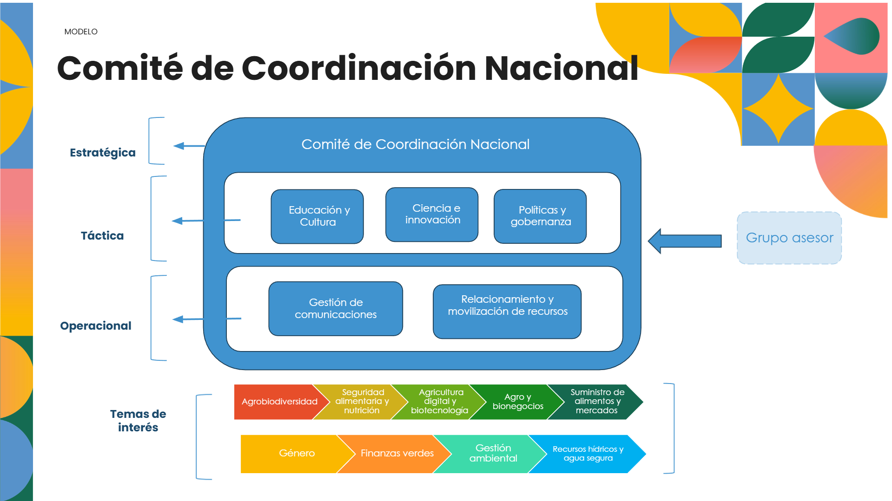

Inicio
Sobre Nosotros
Áreas
Educación y Cultura
Ciencia e Innovación
Políticas y Gobernanza
Gestión de las
Comunicaciones
Relacionamiento y
Gestión de Recursos
Women's Empowerment
ESTRUCTURA CAPÍTULO NACIONAL 2026
Conoce nuestra estructura interna

ESTRUCTURA
03 Áreas Estratégicas (Enfoque Táctico):
Ciencia e Innovación
Educación y Cultura
Políticas y Gobernanza (o Gobernanza e Incidencia)
02 Áreas de Soporte (Operacionales):
Gestión de las Comunicaciones: Responsable de la visibilidad, contenidos y vocerías.
Relacionamiento y Gestión de Recursos: Enfocada en alianzas, sostenibilidad y cooperación técnica y financiera.
Comité Asesor:
Instancia consultiva que brinda orientación técnica, metodológica y estratégica al Comité de Coordinación Nacional.
Integrado por entidades clave como la Secretaría Nacional de Juventud (Senaju) del Ministerio de Educación del Perú y la FAO Perú.
MODELO DE GESTIÓN Y GOBERNANZA
Comité de Coordinación Nacional (CCN):
La instancia de más alto nivel del Capítulo Nacional.
Composición:
Integrado por un/a Coordinador/a General y los Titulares de las 05 Áreas (3 estratégicas y 2 de soporte).
Los miembros del Comité fueron instalados oficialmente el 22 de septiembre de 2025.
Liderazgo por Área:
Cada una de las 05 áreas está liderada por un dúo de Titular y Alterno.
Esto asegura la continuidad de la gestión y el soporte operativo.
Funciones Clave:
Definir la dirección estratégica del Capítulo.
Emitir lineamientos nacionales para su funcionamiento articulado.
Aprobar alianzas clave y rutas de intervención.
Supervisar el desempeño e impacto de las intervenciones.